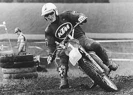

About KTM Company
KTM is one of the largest European motorcycle manufacturers. The company is globally known for its off-road bikes (for tough terrains) and street sports motorcycles, featuring its signature iconic orange color.
Who Founded KTM?

Hans Trunkenpolz
The company was founded in 1934 by the Austrian engineer Hans Trunkenpolz. It started as a simple repair shop in the town of Mattighofen, Austria, and later transformed into the motorcycle giant we know today.
Most Popular Models
| Model | Category | Power (HP) |
|---|---|---|
| KTM Duke 390 | Street / Naked | 44 HP |
| KTM RC 390 | Sport | 44 HP |
| KTM 1290 Super Duke | Hyper-Naked | 180 HP |